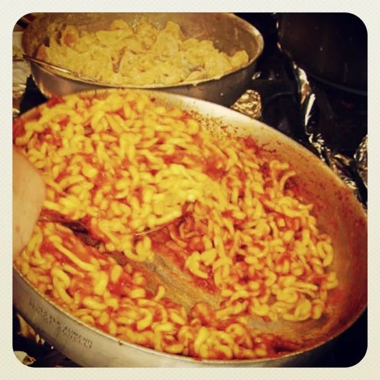
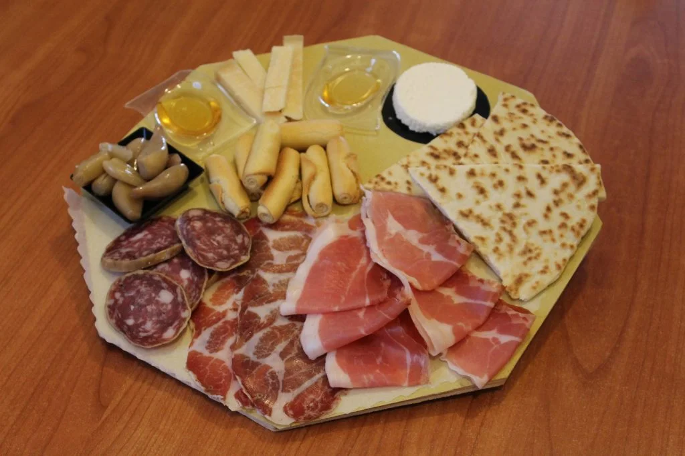
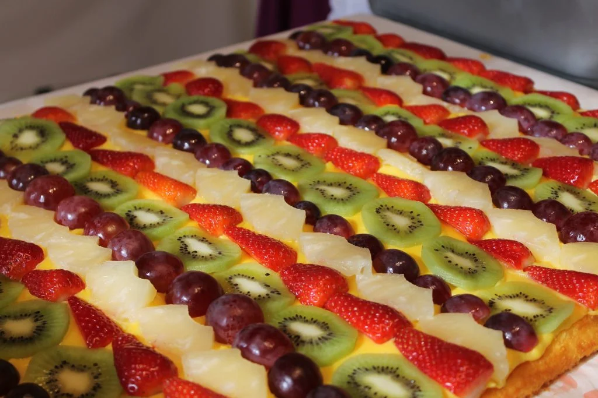

Pieve Cesato · 66ª Edizione
Sagra della
Campagna
Cinque giorni di festa, musica, tradizione e autentica cucina romagnola
Pieve Cesato · 66ª Edizione
Cinque giorni di festa, musica, tradizione e autentica cucina romagnola
Mangiare
Dalle minestre fatte come una volta alla griglia, dalla piadina ai dolci: il menù della Sagra della Campagna è pensato per far venire voglia di fermarsi, scegliere con calma e tornare più di una volta.



Corsa dei Somari, Torneo di Barandell, Hobby Horses, Festa della Luce, animazioni per bambini e molto altro.
Pagina in arrivoConcerti, liscio, DJ set e grandi spettacoli dal vivo. Tutta la musica e la danza della Sagra della Campagna 2026.
Pagina in arrivoLa nostra storia, dove siamo, come raggiungerci e informazioni sulla Parrocchia di Pieve Cesato.
Pagina in arrivo